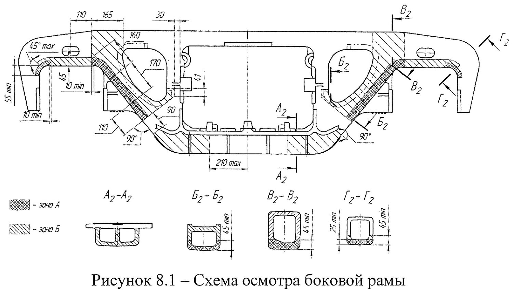
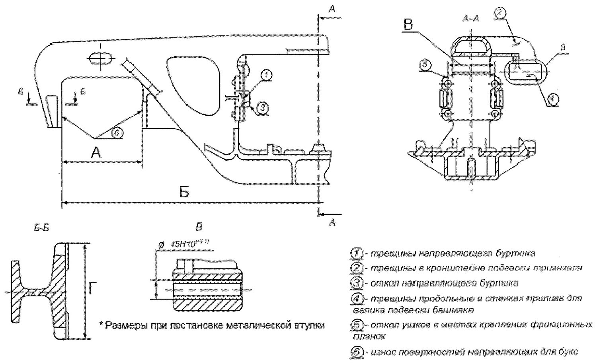
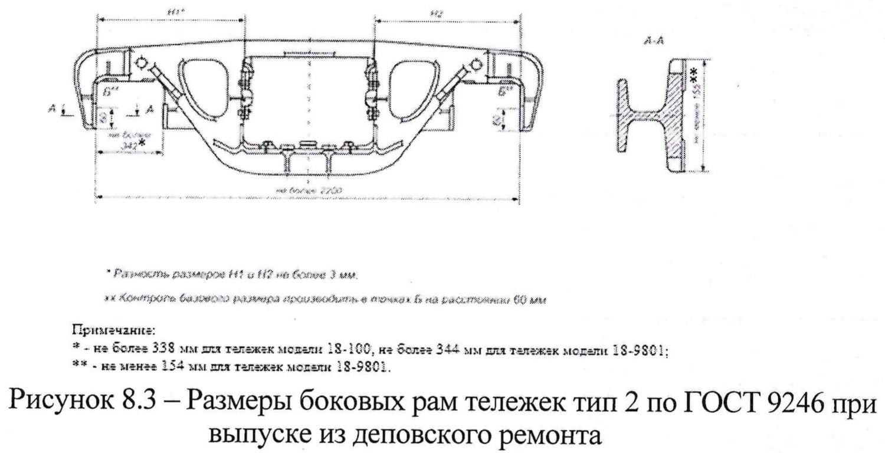

Yon ramalarni ta'mirlash
8-bo'lim: ko'zdan kechirish zonalari, payvandlashga ruxsat etilgan nuqsonlar, buksa proyomini ta'mirlash, yeyilishga chidamli prokladkalar va 8.1-jadval o'lchamlari.
Ta'mirdan oldingi tayyorgarlik (8.1-band)
Yon ramalar ta'mir va dеfektatsiyadan oldin kir, ko'chgan zang va buzilgan lak-bo'yoq qoplamasidan tozalanadi, yuvish mashinasida (kamerasida) yuviladi, tashqi yuzasi yoriq, uchish va yeyilishlarni aniqlash uchun ko'zdan kechiriladi.

Ta'mirga umuman yo'l qo'yilmaydigan holat (8.3-band)
Payvandlash bilan bartaraf etishga ruxsat etilgan nuqsonlar (8.4-band)
Aravacha yon ramalaridagi yoriqlar — 8.2-rasmda ko'rsatilganlaridan tashqari — va o'tuvchi quyma nuqsonlar ruxsat etilmaydi. 8.2-rasmdagi nuqsonlarni «Yuk vagonlarini ta'mirlashda payvandlash va naplavka qilish bo'yicha yo'riqnoma» ga muvofiq bartaraf etish mumkin:
| № | Nuqson | Ruxsat etilgan ta'mir | Band |
|---|---|---|---|
| 1 | Friksion pona uchun yo'naltiruvchi burtchadagi yoriq | Payvandlab bitiriladi | 8.4.1 |
| 2 | Triangel osmasi kronshteynidagi yoriq — uzunligi 32 mm dan ko'p emas | Payvandlab bitiriladi | 8.4.2 |
| 3 | Friksion pona va friksion plankalarni siljitish uchun yo'naltiruvchi burtchaning uchishi | Yangisini payvandlab o'rnatiladi | 8.4.4 |
| 4 | Triangel osmasi valigi prilivi devoridagi bo'ylama yoriq | Payvandlab bitiriladi | 8.4.3 |
| 5 | Friksion plankalarni biriktirish joylaridagi «quloqchalar»ning uchishi | Yangi «quloqcha» payvandlanadi — diagonal bo'yicha joylashgan IKKITADAN ORTIQ EMAS | 8.4.5 |
| 6 | Buksalar uchun yo'naltiruvchi yuzalarning yeyilishi | Naplavka bilan tiklanadi | 8.7–8.8 |

8.1-jadval — yon ramaning o'lchamlari
| O'lcham | Qiymat, mm |
|---|---|
| А — buksa proyomi kengligi | 335 ± 1 * |
| Б — bazaviy o'lcham | 2185 (+7/−5) |
| В | 210 |
| Г — yo'naltiruvchilar kengligi | 160 ± 1 ** |
* — 18-9801 aravachalari uchun 335 (+3/−1) mm.
** — 18-9801 aravachalari uchun 160 (+1/−2) mm.
Friksion plankalarni o'rnatishdan oldingi nazorat (8.5-band)
Friksion plankalarni qo'yishdan oldin yon ramaning ressor proyomi devorlari bilan buksa proyomlarining tashqi chelyustlari orasidagi masofa o'lchanadi.
Buksalar uchun yo'naltiruvchilarni ta'mirlash (8.7–8.8-bandlar)
| Holat | Talab |
|---|---|
| Buksalar uchun yo'naltiruvchi tekisliklarning yeyilishi, ДР | Buksa proyomi kengligi bo'yicha 4 mm dan ko'p emas |
| Xuddi shu, КР | Ruxsat etilmaydi |
| Yeyilgan vertikal yo'naltiruvchi tekisliklar (upor yuzalar) | Yeyilishga chidamli naplavka bilan tiklanadi, qattiqligi 240…300 HB ta'minlanadi, so'ngra З ilovasidagi chizma o'lchamigacha stanokda ishlov beriladi |
Tayanch yuzani mexanik ishlash (8.10-band)
Buksa proyomlari zonasidagi tayanch yuzalarning yeyilmagan qismiga nisbatan chuqurligi 2 mm dan ko'p bo'lmagan yeyilishi metall kesuvchi stanoklarda mexanik ishlov berish bilan bartaraf etiladi.
- Ishlov berishda buksa proyomi devorlarini podrez qilishga yo'l qo'yilmaydi.
- Buksa proyomi tayanch yuzasi prilivining qoldiq balandligi 0,5 mm dan kam bo'lmasligi kerak — bu frezaning rama tanasiga kirib ketishini istisno qiladigan kafolatli balandlik.
- Yon ramani stanokka o'rnatishda bazaviy yuza sifatida ressor osmasini o'rnatish uchun tayanch yuza qabul qilinadi.
- Mexanik ishlovdan keyin o'tkir qirralar va zaustsalar to'mtoqlanadi.
Yeyilishga chidamli almashtiriladigan prokladkalar (8.10–8.12-bandlar)
Yeyilishga chidamli elementlar o'rnatilganda almashtiriladigan prokladkalar ikkala buksa proyomiga ham o'rnatiladi. Priliv balandligiga qarab prokladka chizmasi tanlanadi:
| Priliv balandligi | Prokladka |
|---|---|
| 3 mm gacha (shu jumladan) | М 1698.02.100 СБ, М 1698.05.100 СБ, № 1699.02.100-01, М 1698.03.100 СБ va boshqalar |
| 3 mm dan ortiq | М 1698.02.100-01 СБ yoki М 1698.03.100 СБ (М 1698.03.100-02-01 chizmasi bo'yicha) |
Depo ta'mirida almashtiriladigan prokladkalarni qayta o'rnatishga ruxsat beriladi, agar ularda quyidagilar bo'lmasa (8.11-band):
- prokladka korpusida yoki yeyilishga chidamli plastinada yoriq;
- yeyilishga chidamli plastinaning uchishi;
- yeyilishga chidamli plastina bilan prokladka korpusi orasidagi payvand chokidagi yoriq;
- yeyilishga chidamli plastina tayanch yuzasining yeyilmagan qismiga nisbatan 2 mm dan ortiq notekis yeyilishi.

Friksion plankalar va bazalar farqi (8.14–8.16-bandlar)
- Qalinligi 16 mm bo'lgan friksion plankalar texnik holatidan qat'i nazar, М 1698 ПКБ ЦВ loyihasi bo'yicha tarkibiy plankalarga almashtiriladi: qo'zg'almas 10 mm (М 1698.02.001) + harakatlanuvchi 6 mm (М 1698.02.004), yoki С 03.04 bo'yicha 16 mm li planka, yoki 8 mm + 8 mm (1699.02.001 va 1699.02.004).
- Bitta aravachaning yon ramalari bazalari farqi 2 mm dan ko'p bo'lmasligi kerak. Har bir yon rama bo'yicha amalda o'lchangan baza qiymatlari Д ilovasidagi ВУ-32 jurnaliga kiritiladi.
- 18-100 modeli aravachalari ta'mirga kelganda М 1698 ПКБ ЦВ loyihasi bo'yicha tayyorlangan friksion plankalar o'rnatiladi.
- Ta'mirdan keyin yon ramalarning 8.2 va 8.3-rasmlarda ko'rsatilgan o'lchamlari tekshiriladi.
Nazorat savollari
Avval o'zingiz javob bering, so'ngra tekshiring.
1. Yon ramada qaysi ikkita zonaga alohida e'tibor beriladi?
2. Buksa proyomida kanavkasimon yeyilish 2,5 mm chiqdi. Qanday qaror?
3. «Quloqchalar»ni payvandlash bo'yicha qanday cheklov bor?
4. Tayanch yuzani mexanik ishlagandan keyin priliv balandligi kamida qancha qolishi kerak?
5. Yeyilgan vertikal yo'naltiruvchi tekisliklar qanday tiklanadi va qanday qattiqlik talab qilinadi?
Manba: РД 32 ЦВ 052-2009 — ГОСТ 9246-2013 bo'yicha zazorli yon skolzunli tip 2 yuk vagon aravachalarini ta'mirlash. Umumiy ta'mir rahbariyati (2026-yil 1-iyuldan amaldagi tahrir).
Andijon vagon deposi · telejka ta'mirlash sexi.